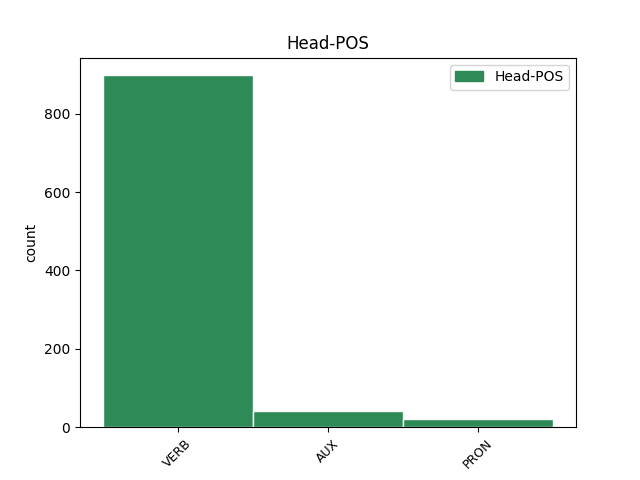

Distribution of features within this leaf

Agreement Rules sorted by frequency.
- When the dependent token is the conjunct(conj) of the head token,
1 A _ _ _ _ 0 _ _ _
2 magukat _ _ _ _ 0 _ _ _
3 nyeregben _ _ _ _ 0 _ _ _
4 érző _ _ _ _ 0 _ _ _
5 albánok _ _ _ _ 0 _ _ _
6 azonnal _ _ _ _ 0 _ _ _
7 elvetették _ _ _ _ 0 _ _ _
8 a _ _ _ _ 0 _ _ _
9 kantonizáció _ _ _ _ 0 _ _ _
10 tervét _ _ _ _ 0 _ _ _
11 , _ _ _ _ 0 _ _ _
12 s _ _ _ _ 0 _ _ _
13 Hasim _ _ _ _ 0 _ _ _
14 Thaci _ _ _ _ 0 _ _ _
15 , _ _ _ _ 0 _ _ _
16 a _ _ _ _ 0 _ _ _
17 Koszovói _ _ _ _ 0 _ _ _
18 Felszabadítási _ _ _ _ 0 _ _ _
19 Hadsereg _ _ _ _ 0 _ _ _
20 ( _ _ _ _ 0 _ _ _
21 UCK _ _ _ _ 0 _ _ _
22 ) _ _ _ _ 0 _ _ _
23 vezetője _ _ _ _ 0 _ _ _
24 és _ _ _ _ 0 _ _ _
25 a _ _ _ _ 0 _ _ _
26 világ _ _ _ _ 0 _ _ _
27 által _ _ _ _ 0 _ _ _
28 még _ _ _ _ 0 _ _ _
29 el _ _ _ _ 0 _ _ _
30 nem _ _ _ _ 0 _ _ _
31 ismert _ _ _ _ 0 _ _ _
32 koszovói _ _ _ _ 0 _ _ _
33 kormány _ _ _ _ 0 _ _ _
34 első _ _ _ _ 0 _ _ _
35 embere _ _ _ _ 0 _ _ _
36 közölte _ _ _ _ 0 _ _ _
37 : _ _ _ _ 0 _ _ _
38 nincs nincs VERB _ Definite=Ind|Mood=Ind|Number=Sing|Person=3|Tense=Pres|VerbForm=Fin|Voice=Act 0 _ _ _
39 idő _ _ _ _ 0 _ _ _
40 a _ _ _ _ 0 _ _ _
41 megosztásról _ _ _ _ 0 _ _ _
42 tárgyalni _ _ _ _ 0 _ _ _
43 , _ _ _ _ 0 _ _ _
44 s _ _ _ _ 0 _ _ _
45 aki _ _ _ _ 0 _ _ _
46 erről _ _ _ _ 0 _ _ _
47 a _ _ _ _ 0 _ _ _
48 kérdésről _ _ _ _ 0 _ _ _
49 akar _ _ _ _ 0 _ _ _
50 vitatkozni _ _ _ _ 0 _ _ _
51 , _ _ _ _ 0 _ _ _
52 az _ _ _ _ 0 _ _ _
53 menjen megy VERB _ Definite=Ind|Mood=Imp|Number=Sing|Person=3|Tense=Pres|VerbForm=Fin|Voice=Act 38 conj _ _
54 el _ _ _ _ 0 _ _ _
55 Belgrádba _ _ _ _ 0 _ _ _
56 , _ _ _ _ 0 _ _ _
57 a _ _ _ _ 0 _ _ _
58 tudományos _ _ _ _ 0 _ _ _
59 akadémiára _ _ _ _ 0 _ _ _
60 . _ _ _ _ 0 _ _ _
1 A _ _ _ _ 0 _ _ _
2 magukat _ _ _ _ 0 _ _ _
3 nyeregben _ _ _ _ 0 _ _ _
4 érző _ _ _ _ 0 _ _ _
5 albánok _ _ _ _ 0 _ _ _
6 azonnal _ _ _ _ 0 _ _ _
7 elvetették _ _ _ _ 0 _ _ _
8 a _ _ _ _ 0 _ _ _
9 kantonizáció _ _ _ _ 0 _ _ _
10 tervét _ _ _ _ 0 _ _ _
11 , _ _ _ _ 0 _ _ _
12 s _ _ _ _ 0 _ _ _
13 Hasim _ _ _ _ 0 _ _ _
14 Thaci _ _ _ _ 0 _ _ _
15 , _ _ _ _ 0 _ _ _
16 a _ _ _ _ 0 _ _ _
17 Koszovói _ _ _ _ 0 _ _ _
18 Felszabadítási _ _ _ _ 0 _ _ _
19 Hadsereg _ _ _ _ 0 _ _ _
20 ( _ _ _ _ 0 _ _ _
21 UCK _ _ _ _ 0 _ _ _
22 ) _ _ _ _ 0 _ _ _
23 vezetője _ _ _ _ 0 _ _ _
24 és _ _ _ _ 0 _ _ _
25 a _ _ _ _ 0 _ _ _
26 világ _ _ _ _ 0 _ _ _
27 által _ _ _ _ 0 _ _ _
28 még _ _ _ _ 0 _ _ _
29 el _ _ _ _ 0 _ _ _
30 nem _ _ _ _ 0 _ _ _
31 ismert _ _ _ _ 0 _ _ _
32 koszovói _ _ _ _ 0 _ _ _
33 kormány _ _ _ _ 0 _ _ _
34 első _ _ _ _ 0 _ _ _
35 embere _ _ _ _ 0 _ _ _
36 közölte _ _ _ _ 0 _ _ _
37 : _ _ _ _ 0 _ _ _
38 nincs _ _ _ _ 0 _ _ _
39 idő _ _ _ _ 0 _ _ _
40 a _ _ _ _ 0 _ _ _
41 megosztásról _ _ _ _ 0 _ _ _
42 tárgyalni _ _ _ _ 0 _ _ _
43 , _ _ _ _ 0 _ _ _
44 s _ _ _ _ 0 _ _ _
45 aki _ _ _ _ 0 _ _ _
46 erről _ _ _ _ 0 _ _ _
47 a _ _ _ _ 0 _ _ _
48 kérdésről _ _ _ _ 0 _ _ _
49 akar _ _ _ _ 0 _ _ _
50 vitatkozni _ _ _ _ 0 _ _ _
51 , _ _ _ _ 0 _ _ _
52 az az PRON _ Case=Nom|Number=Sing|Person=3|PronType=Dem 53 subj _ _
53 menjen megy VERB _ Definite=Ind|Mood=Imp|Number=Sing|Person=3|Tense=Pres|VerbForm=Fin|Voice=Act 0 _ _ _
54 el _ _ _ _ 0 _ _ _
55 Belgrádba _ _ _ _ 0 _ _ _
56 , _ _ _ _ 0 _ _ _
57 a _ _ _ _ 0 _ _ _
58 tudományos _ _ _ _ 0 _ _ _
59 akadémiára _ _ _ _ 0 _ _ _
60 . _ _ _ _ 0 _ _ _
1 A _ _ _ _ 0 _ _ _
2 magukat _ _ _ _ 0 _ _ _
3 nyeregben _ _ _ _ 0 _ _ _
4 érző _ _ _ _ 0 _ _ _
5 albánok _ _ _ _ 0 _ _ _
6 azonnal _ _ _ _ 0 _ _ _
7 elvetették _ _ _ _ 0 _ _ _
8 a _ _ _ _ 0 _ _ _
9 kantonizáció _ _ _ _ 0 _ _ _
10 tervét _ _ _ _ 0 _ _ _
11 , _ _ _ _ 0 _ _ _
12 s _ _ _ _ 0 _ _ _
13 Hasim _ _ _ _ 0 _ _ _
14 Thaci _ _ _ _ 0 _ _ _
15 , _ _ _ _ 0 _ _ _
16 a _ _ _ _ 0 _ _ _
17 Koszovói _ _ _ _ 0 _ _ _
18 Felszabadítási _ _ _ _ 0 _ _ _
19 Hadsereg _ _ _ _ 0 _ _ _
20 ( _ _ _ _ 0 _ _ _
21 UCK _ _ _ _ 0 _ _ _
22 ) _ _ _ _ 0 _ _ _
23 vezetője _ _ _ _ 0 _ _ _
24 és _ _ _ _ 0 _ _ _
25 a _ _ _ _ 0 _ _ _
26 világ _ _ _ _ 0 _ _ _
27 által _ _ _ _ 0 _ _ _
28 még _ _ _ _ 0 _ _ _
29 el _ _ _ _ 0 _ _ _
30 nem _ _ _ _ 0 _ _ _
31 ismert _ _ _ _ 0 _ _ _
32 koszovói _ _ _ _ 0 _ _ _
33 kormány _ _ _ _ 0 _ _ _
34 első _ _ _ _ 0 _ _ _
35 embere _ _ _ _ 0 _ _ _
36 közölte közöl VERB _ Definite=Def|Mood=Ind|Number=Sing|Person=3|Tense=Past|VerbForm=Fin|Voice=Act 0 _ _ _
37 : _ _ _ _ 0 _ _ _
38 nincs nincs VERB _ Definite=Ind|Mood=Ind|Number=Sing|Person=3|Tense=Pres|VerbForm=Fin|Voice=Act 36 comp:obj _ _
39 idő _ _ _ _ 0 _ _ _
40 a _ _ _ _ 0 _ _ _
41 megosztásról _ _ _ _ 0 _ _ _
42 tárgyalni _ _ _ _ 0 _ _ _
43 , _ _ _ _ 0 _ _ _
44 s _ _ _ _ 0 _ _ _
45 aki _ _ _ _ 0 _ _ _
46 erről _ _ _ _ 0 _ _ _
47 a _ _ _ _ 0 _ _ _
48 kérdésről _ _ _ _ 0 _ _ _
49 akar _ _ _ _ 0 _ _ _
50 vitatkozni _ _ _ _ 0 _ _ _
51 , _ _ _ _ 0 _ _ _
52 az _ _ _ _ 0 _ _ _
53 menjen _ _ _ _ 0 _ _ _
54 el _ _ _ _ 0 _ _ _
55 Belgrádba _ _ _ _ 0 _ _ _
56 , _ _ _ _ 0 _ _ _
57 a _ _ _ _ 0 _ _ _
58 tudományos _ _ _ _ 0 _ _ _
59 akadémiára _ _ _ _ 0 _ _ _
60 . _ _ _ _ 0 _ _ _
1 A _ _ _ _ 0 _ _ _
2 Szlobodan _ _ _ _ 0 _ _ _
3 Milosevics _ _ _ _ 0 _ _ _
4 jugoszláv _ _ _ _ 0 _ _ _
5 elnök _ _ _ _ 0 _ _ _
6 vezette _ _ _ _ 0 _ _ _
7 belgrádi _ _ _ _ 0 _ _ _
8 rezsim _ _ _ _ 0 _ _ _
9 pedig _ _ _ _ 0 _ _ _
10 azért az PRON _ Case=Cau|Number=Sing|Person=3|PronType=Dem 11 mod@obl _ _
11 cenzúrázza cenzúráz VERB _ Definite=Def|Mood=Ind|Number=Sing|Person=3|Tense=Pres|VerbForm=Fin|Voice=Act 0 _ _ _
12 a _ _ _ _ 0 _ _ _
13 szerbek _ _ _ _ 0 _ _ _
14 megpróbáltatásairól _ _ _ _ 0 _ _ _
15 és _ _ _ _ 0 _ _ _
16 tömeges _ _ _ _ 0 _ _ _
17 meneküléséről _ _ _ _ 0 _ _ _
18 szóló _ _ _ _ 0 _ _ _
19 híreket _ _ _ _ 0 _ _ _
20 , _ _ _ _ 0 _ _ _
21 hogy _ _ _ _ 0 _ _ _
22 továbbra _ _ _ _ 0 _ _ _
23 is _ _ _ _ 0 _ _ _
24 azt _ _ _ _ 0 _ _ _
25 állíthassa _ _ _ _ 0 _ _ _
26 : _ _ _ _ 0 _ _ _
27 Szerbia _ _ _ _ 0 _ _ _
28 megvédte _ _ _ _ 0 _ _ _
29 Koszovót _ _ _ _ 0 _ _ _
30 , _ _ _ _ 0 _ _ _
31 s _ _ _ _ 0 _ _ _
32 így _ _ _ _ 0 _ _ _
33 megnyerte _ _ _ _ 0 _ _ _
34 a _ _ _ _ 0 _ _ _
35 NATO _ _ _ _ 0 _ _ _
36 elleni _ _ _ _ 0 _ _ _
37 háborút _ _ _ _ 0 _ _ _
38 . _ _ _ _ 0 _ _ _
1 A _ _ _ _ 0 _ _ _
2 szerbek _ _ _ _ 0 _ _ _
3 közül _ _ _ _ 0 _ _ _
4 jelenleg _ _ _ _ 0 _ _ _
5 csak _ _ _ _ 0 _ _ _
6 az _ _ _ _ 0 _ _ _
7 ellenzékiek _ _ _ _ 0 _ _ _
8 támogatják támogat VERB _ Definite=Def|Mood=Ind|Number=Plur|Person=3|Tense=Pres|VerbForm=Fin|Voice=Act 0 _ _ _
9 azt _ _ _ _ 0 _ _ _
10 a _ _ _ _ 0 _ _ _
11 néhány _ _ _ _ 0 _ _ _
12 évvel _ _ _ _ 0 _ _ _
13 ezelőtt _ _ _ _ 0 _ _ _
14 előterjesztett _ _ _ _ 0 _ _ _
15 tervet _ _ _ _ 0 _ _ _
16 , _ _ _ _ 0 _ _ _
17 mely _ _ _ _ 0 _ _ _
18 szerint _ _ _ _ 0 _ _ _
19 Koszovót _ _ _ _ 0 _ _ _
20 meg _ _ _ _ 0 _ _ _
21 kellene kell VERB _ Definite=Ind|Mood=Cnd|Number=Sing|Person=3|Tense=Pres|VerbForm=Fin|Voice=Act 8 mod _ _
22 osztani _ _ _ _ 0 _ _ _
23 a _ _ _ _ 0 _ _ _
24 szerbek _ _ _ _ 0 _ _ _
25 és _ _ _ _ 0 _ _ _
26 a _ _ _ _ 0 _ _ _
27 lakosság _ _ _ _ 0 _ _ _
28 többségét _ _ _ _ 0 _ _ _
29 kitevő _ _ _ _ 0 _ _ _
30 albánok _ _ _ _ 0 _ _ _
31 között _ _ _ _ 0 _ _ _
32 . _ _ _ _ 0 _ _ _
1 A _ _ _ _ 0 _ _ _
2 Corso _ _ _ _ 0 _ _ _
3 talpra _ _ _ _ 0 _ _ _
4 állítása _ _ _ _ 0 _ _ _
5 a _ _ _ _ 0 _ _ _
6 társaságot _ _ _ _ 0 _ _ _
7 1994-ben _ _ _ _ 0 _ _ _
8 privatizáló _ _ _ _ 0 _ _ _
9 — _ _ _ _ 0 _ _ _
10 a _ _ _ _ 0 _ _ _
11 cég _ _ _ _ 0 _ _ _
12 vezetőiből _ _ _ _ 0 _ _ _
13 és _ _ _ _ 0 _ _ _
14 alkalmazottaiból _ _ _ _ 0 _ _ _
15 álló _ _ _ _ 0 _ _ _
16 — _ _ _ _ 0 _ _ _
17 konzorciumnak _ _ _ _ 0 _ _ _
18 sem _ _ _ _ 0 _ _ _
19 sikerült sikerül VERB _ Definite=Ind|Mood=Ind|Number=Sing|Person=3|Tense=Past|VerbForm=Fin|Voice=Act 0 _ _ _
20 ( _ _ _ _ 0 _ _ _
21 a _ _ _ _ 0 _ _ _
22 vételár _ _ _ _ 0 _ _ _
23 mindössze _ _ _ _ 0 _ _ _
24 198 _ _ _ _ 0 _ _ _
25 millió _ _ _ _ 0 _ _ _
26 forint _ _ _ _ 0 _ _ _
27 volt van AUX _ Definite=Ind|Mood=Ind|Number=Sing|Person=3|Tense=Past|VerbForm=Fin|Voice=Act 19 parataxis _ SpaceAfter=No
28 , _ _ _ _ 0 _ _ _
29 amelynek _ _ _ _ 0 _ _ _
30 csak _ _ _ _ 0 _ _ _
31 a _ _ _ _ 0 _ _ _
32 30 _ _ _ _ 0 _ _ _
33 százalékát _ _ _ _ 0 _ _ _
34 kellett _ _ _ _ 0 _ _ _
35 készpénzben _ _ _ _ 0 _ _ _
36 kifizetni _ _ _ _ 0 _ _ _
37 ) _ _ _ _ 0 _ _ _
38 . _ _ _ _ 0 _ _ _
1 Richard _ _ _ _ 0 _ _ _
2 Holbrooke _ _ _ _ 0 _ _ _
3 , _ _ _ _ 0 _ _ _
4 az _ _ _ _ 0 _ _ _
5 Egyesült _ _ _ _ 0 _ _ _
6 Államok _ _ _ _ 0 _ _ _
7 múlt _ _ _ _ 0 _ _ _
8 szerdán _ _ _ _ 0 _ _ _
9 beiktatott _ _ _ _ 0 _ _ _
10 új _ _ _ _ 0 _ _ _
11 ENSZ-nagykövete _ _ _ _ 0 _ _ _
12 , _ _ _ _ 0 _ _ _
13 aki _ _ _ _ 0 _ _ _
14 jelentős _ _ _ _ 0 _ _ _
15 szerepet _ _ _ _ 0 _ _ _
16 játszott _ _ _ _ 0 _ _ _
17 mind _ _ _ _ 0 _ _ _
18 a _ _ _ _ 0 _ _ _
19 boszniai _ _ _ _ 0 _ _ _
20 , _ _ _ _ 0 _ _ _
21 mind _ _ _ _ 0 _ _ _
22 pedig _ _ _ _ 0 _ _ _
23 a _ _ _ _ 0 _ _ _
24 koszovói _ _ _ _ 0 _ _ _
25 rendezési _ _ _ _ 0 _ _ _
26 erőfeszítésekben _ _ _ _ 0 _ _ _
27 , _ _ _ _ 0 _ _ _
28 mindenesetre _ _ _ _ 0 _ _ _
29 elvetette _ _ _ _ 0 _ _ _
30 a _ _ _ _ 0 _ _ _
31 Koszovó _ _ _ _ 0 _ _ _
32 felosztásával _ _ _ _ 0 _ _ _
33 kapcsolatos _ _ _ _ 0 _ _ _
34 elképzeléseket _ _ _ _ 0 _ _ _
35 , _ _ _ _ 0 _ _ _
36 s _ _ _ _ 0 _ _ _
37 hét _ _ _ _ 0 _ _ _
38 eleji _ _ _ _ 0 _ _ _
39 pristinai _ _ _ _ 0 _ _ _
40 látogatása _ _ _ _ 0 _ _ _
41 során _ _ _ _ 0 _ _ _
42 kijelentette _ _ _ _ 0 _ _ _
43 : _ _ _ _ 0 _ _ _
44 tovább _ _ _ _ 0 _ _ _
45 kell _ _ _ _ 0 _ _ _
46 folytatni _ _ _ _ 0 _ _ _
47 a _ _ _ _ 0 _ _ _
48 demokratikus _ _ _ _ 0 _ _ _
49 intézményrendszer _ _ _ _ 0 _ _ _
50 kiépítését _ _ _ _ 0 _ _ _
51 , _ _ _ _ 0 _ _ _
52 az _ _ _ _ 0 _ _ _
53 ENSZ-nek _ _ _ _ 0 _ _ _
54 pedig _ _ _ _ 0 _ _ _
55 be _ _ _ _ 0 _ _ _
56 kell kell VERB _ Definite=Ind|Mood=Ind|Number=Sing|Person=3|Tense=Pres|VerbForm=Fin|Voice=Act 0 _ _ _
57 bizonyítania bizonyít VERB _ Number=Sing|Person=3|Tense=Pres|VerbForm=Inf|Voice=Act 56 comp:obj@x _ SpaceAfter=No
58 , _ _ _ _ 0 _ _ _
59 hogy _ _ _ _ 0 _ _ _
60 képes _ _ _ _ 0 _ _ _
61 célkitűzéseinek _ _ _ _ 0 _ _ _
62 megvalósítására _ _ _ _ 0 _ _ _
63 . _ _ _ _ 0 _ _ _
1 Schröder _ _ _ _ 0 _ _ _
2 tavaly _ _ _ _ 0 _ _ _
3 a _ _ _ _ 0 _ _ _
4 szociáldemokratákat _ _ _ _ 0 _ _ _
5 győzte győz VERB _ Definite=Def|Mood=Ind|Number=Sing|Person=3|Tense=Past|VerbForm=Fin|Voice=Act 0 _ _ _
6 meg _ _ _ _ 0 _ _ _
7 , _ _ _ _ 0 _ _ _
8 legyenek lesz AUX _ Definite=Ind|Mood=Imp|Number=Plur|Person=3|Tense=Pres|VerbForm=Fin|Voice=Act 5 comp:obl _ _
9 választók _ _ _ _ 0 _ _ _
10 , _ _ _ _ 0 _ _ _
11 s _ _ _ _ 0 _ _ _
12 ezzel _ _ _ _ 0 _ _ _
13 hozta _ _ _ _ 0 _ _ _
14 vissza _ _ _ _ 0 _ _ _
15 a _ _ _ _ 0 _ _ _
16 hatalomba _ _ _ _ 0 _ _ _
17 az _ _ _ _ 0 _ _ _
18 SPD-t _ _ _ _ 0 _ _ _
19 . _ _ _ _ 0 _ _ _
1 Ebből _ _ _ _ 0 _ _ _
2 a _ _ _ _ 0 _ _ _
3 szempontból _ _ _ _ 0 _ _ _
4 is _ _ _ _ 0 _ _ _
5 különleges _ _ _ _ 0 _ _ _
6 jelentősége _ _ _ _ 0 _ _ _
7 van van VERB _ Definite=Ind|Mood=Ind|Number=Sing|Person=3|Tense=Pres|VerbForm=Fin|Voice=Act 0 _ _ _
8 annak az PRON _ Case=Gen|Number=Sing|Person=3|PronType=Dem 7 mod@att _ SpaceAfter=No
9 , _ _ _ _ 0 _ _ _
10 hogy _ _ _ _ 0 _ _ _
11 az _ _ _ _ 0 _ _ _
12 albánok _ _ _ _ 0 _ _ _
13 már _ _ _ _ 0 _ _ _
14 több _ _ _ _ 0 _ _ _
15 mint _ _ _ _ 0 _ _ _
16 egy _ _ _ _ 0 _ _ _
17 hete _ _ _ _ 0 _ _ _
18 nem _ _ _ _ 0 _ _ _
19 engedik _ _ _ _ 0 _ _ _
20 be _ _ _ _ 0 _ _ _
21 a _ _ _ _ 0 _ _ _
22 városba _ _ _ _ 0 _ _ _
23 azokat _ _ _ _ 0 _ _ _
24 az _ _ _ _ 0 _ _ _
25 orosz _ _ _ _ 0 _ _ _
26 Kfor-katonákat _ _ _ _ 0 _ _ _
27 , _ _ _ _ 0 _ _ _
28 akiknek _ _ _ _ 0 _ _ _
29 az _ _ _ _ 0 _ _ _
30 Orahovacban _ _ _ _ 0 _ _ _
31 június _ _ _ _ 0 _ _ _
32 óta _ _ _ _ 0 _ _ _
33 szolgáló _ _ _ _ 0 _ _ _
34 hollandokat _ _ _ _ 0 _ _ _
35 kellett _ _ _ _ 0 _ _ _
36 volna _ _ _ _ 0 _ _ _
37 felváltaniuk _ _ _ _ 0 _ _ _
38 . _ _ _ _ 0 _ _ _
1 Korábban _ _ _ _ 0 _ _ _
2 egyetlen _ _ _ _ 0 _ _ _
3 évben _ _ _ _ 0 _ _ _
4 sem _ _ _ _ 0 _ _ _
5 haltak hal VERB _ Definite=Ind|Mood=Ind|Number=Plur|Person=3|Tense=Past|VerbForm=Fin|Voice=Act 0 _ _ _
6 meg _ _ _ _ 0 _ _ _
7 ennyien ennyi PRON _ Case=Ess|Number=Sing|Number[psed]=None|Number[psor]=None|Person=3|Person[psor]=None|PronType=Dem 5 mod@mode _ _
8 a _ _ _ _ 0 _ _ _
9 gyilkos _ _ _ _ 0 _ _ _
10 betegség _ _ _ _ 0 _ _ _
11 következtében _ _ _ _ 0 _ _ _
12 . _ _ _ _ 0 _ _ _
1 Ebből _ _ _ _ 0 _ _ _
2 a _ _ _ _ 0 _ _ _
3 szempontból _ _ _ _ 0 _ _ _
4 is _ _ _ _ 0 _ _ _
5 különleges _ _ _ _ 0 _ _ _
6 jelentősége _ _ _ _ 0 _ _ _
7 van _ _ _ _ 0 _ _ _
8 annak _ _ _ _ 0 _ _ _
9 , _ _ _ _ 0 _ _ _
10 hogy _ _ _ _ 0 _ _ _
11 az _ _ _ _ 0 _ _ _
12 albánok _ _ _ _ 0 _ _ _
13 már _ _ _ _ 0 _ _ _
14 több _ _ _ _ 0 _ _ _
15 mint _ _ _ _ 0 _ _ _
16 egy _ _ _ _ 0 _ _ _
17 hete _ _ _ _ 0 _ _ _
18 nem _ _ _ _ 0 _ _ _
19 engedik _ _ _ _ 0 _ _ _
20 be _ _ _ _ 0 _ _ _
21 a _ _ _ _ 0 _ _ _
22 városba _ _ _ _ 0 _ _ _
23 azokat _ _ _ _ 0 _ _ _
24 az _ _ _ _ 0 _ _ _
25 orosz _ _ _ _ 0 _ _ _
26 Kfor-katonákat _ _ _ _ 0 _ _ _
27 , _ _ _ _ 0 _ _ _
28 akiknek _ _ _ _ 0 _ _ _
29 az _ _ _ _ 0 _ _ _
30 Orahovacban _ _ _ _ 0 _ _ _
31 június _ _ _ _ 0 _ _ _
32 óta _ _ _ _ 0 _ _ _
33 szolgáló _ _ _ _ 0 _ _ _
34 hollandokat _ _ _ _ 0 _ _ _
35 kellett kell VERB _ Definite=Ind|Mood=Ind|Number=Sing|Person=3|Tense=Past|VerbForm=Fin|Voice=Act 36 comp:aux _ _
36 volna volna AUX _ Definite=Ind|Mood=Cnd|Number=Sing|Person=3|Tense=Pres|VerbForm=Fin|Voice=Act 0 _ _ _
37 felváltaniuk _ _ _ _ 0 _ _ _
38 . _ _ _ _ 0 _ _ _
1 Az _ _ _ _ 0 _ _ _
2 SPD _ _ _ _ 0 _ _ _
3 ugyanis _ _ _ _ 0 _ _ _
4 tavaly _ _ _ _ 0 _ _ _
5 őszi _ _ _ _ 0 _ _ _
6 választási _ _ _ _ 0 _ _ _
7 győzelme _ _ _ _ 0 _ _ _
8 óta _ _ _ _ 0 _ _ _
9 sem _ _ _ _ 0 _ _ _
10 tudta _ _ _ _ 0 _ _ _
11 eldönteni _ _ _ _ 0 _ _ _
12 , _ _ _ _ 0 _ _ _
13 mi mi PRON _ Case=Nom|Number=Sing|Person=3|PronType=Int 14 comp:pred _ _
14 legyen lesz AUX _ Definite=Ind|Mood=Imp|Number=Sing|Person=3|Tense=Pres|VerbForm=Fin|Voice=Act 0 _ _ _
15 : _ _ _ _ 0 _ _ _
16 a _ _ _ _ 0 _ _ _
17 " _ _ _ _ 0 _ _ _
18 szabadság _ _ _ _ 0 _ _ _
19 , _ _ _ _ 0 _ _ _
20 igazságosság _ _ _ _ 0 _ _ _
21 és _ _ _ _ 0 _ _ _
22 szolidaritás _ _ _ _ 0 _ _ _
23 " _ _ _ _ 0 _ _ _
24 pártja _ _ _ _ 0 _ _ _
25 , _ _ _ _ 0 _ _ _
26 amelyik _ _ _ _ 0 _ _ _
27 új _ _ _ _ 0 _ _ _
28 rendként _ _ _ _ 0 _ _ _
29 a _ _ _ _ 0 _ _ _
30 " _ _ _ _ 0 _ _ _
31 demokratikus _ _ _ _ 0 _ _ _
32 szocializmus _ _ _ _ 0 _ _ _
33 " _ _ _ _ 0 _ _ _
34 kialakítására _ _ _ _ 0 _ _ _
35 törekszik _ _ _ _ 0 _ _ _
36 — _ _ _ _ 0 _ _ _
37 amint _ _ _ _ 0 _ _ _
38 ez _ _ _ _ 0 _ _ _
39 szó _ _ _ _ 0 _ _ _
40 szerint _ _ _ _ 0 _ _ _
41 olvasható _ _ _ _ 0 _ _ _
42 az _ _ _ _ 0 _ _ _
43 1959-es _ _ _ _ 0 _ _ _
44 Bad _ _ _ _ 0 _ _ _
45 Godesberg-i _ _ _ _ 0 _ _ _
46 programban _ _ _ _ 0 _ _ _
47 — _ _ _ _ 0 _ _ _
48 , _ _ _ _ 0 _ _ _
49 vagy _ _ _ _ 0 _ _ _
50 Európa _ _ _ _ 0 _ _ _
51 legnagyobb _ _ _ _ 0 _ _ _
52 gazdasági _ _ _ _ 0 _ _ _
53 és _ _ _ _ 0 _ _ _
54 politikai _ _ _ _ 0 _ _ _
55 hatalmának _ _ _ _ 0 _ _ _
56 az _ _ _ _ 0 _ _ _
57 államháztartási _ _ _ _ 0 _ _ _
58 hiány _ _ _ _ 0 _ _ _
59 és _ _ _ _ 0 _ _ _
60 a _ _ _ _ 0 _ _ _
61 GDP _ _ _ _ 0 _ _ _
62 viszonyszáma _ _ _ _ 0 _ _ _
63 fölött _ _ _ _ 0 _ _ _
64 őrködő _ _ _ _ 0 _ _ _
65 , _ _ _ _ 0 _ _ _
66 a _ _ _ _ 0 _ _ _
67 gazdasági _ _ _ _ 0 _ _ _
68 élet _ _ _ _ 0 _ _ _
69 hatalmasságaival _ _ _ _ 0 _ _ _
70 jó _ _ _ _ 0 _ _ _
71 viszonyt _ _ _ _ 0 _ _ _
72 ápoló _ _ _ _ 0 _ _ _
73 pragmatikus _ _ _ _ 0 _ _ _
74 menedzsere _ _ _ _ 0 _ _ _
75 . _ _ _ _ 0 _ _ _
1 A _ _ _ _ 0 _ _ _
2 " _ _ _ _ 0 _ _ _
3 legkevésbé _ _ _ _ 0 _ _ _
4 ismert _ _ _ _ 0 _ _ _
5 " _ _ _ _ 0 _ _ _
6 stimmel _ _ _ _ 0 _ _ _
7 , _ _ _ _ 0 _ _ _
8 a _ _ _ _ 0 _ _ _
9 " _ _ _ _ 0 _ _ _
10 kultikust _ _ _ _ 0 _ _ _
11 " _ _ _ _ 0 _ _ _
12 a _ _ _ _ 0 _ _ _
13 romantika _ _ _ _ 0 _ _ _
14 kedvéért _ _ _ _ 0 _ _ _
15 teszik tesz VERB _ Definite=Def|Mood=Ind|Number=Plur|Person=3|Tense=Pres|VerbForm=Fin|Voice=Act 0 _ _ _
16 hozzá ő PRON _ Case=All|Number=Sing|Number[psed]=None|Number[psor]=None|Person=3|Person[psor]=None|PronType=Prs 15 compound@preverb _ _
17 általam _ _ _ _ 0 _ _ _
18 ismeretlen _ _ _ _ 0 _ _ _
19 egyének _ _ _ _ 0 _ _ _
20 . _ _ _ _ 0 _ _ _
1 A _ _ _ _ 0 _ _ _
2 kérdés _ _ _ _ 0 _ _ _
3 csak _ _ _ _ 0 _ _ _
4 az az PRON _ Case=Nom|Number=Sing|Person=3|PronType=Dem 0 _ _ _
5 : _ _ _ _ 0 _ _ _
6 meg _ _ _ _ 0 _ _ _
7 is _ _ _ _ 0 _ _ _
8 tudja tud VERB _ Definite=Def|Mood=Ind|Number=Sing|Person=3|Tense=Pres|VerbForm=Fin|Voice=Act 4 comp:obj@pred _ _
9 -e _ _ _ _ 0 _ _ _
10 ott _ _ _ _ 0 _ _ _
11 tartani _ _ _ _ 0 _ _ _
12 . _ _ _ _ 0 _ _ _
1 Közülük közül PRON _ Case=Nom|Number=Plur|Number[psed]=None|Number[psor]=None|Person=3|Person[psor]=None|PronType=Prs 6 mod@tfrom _ _
2 már _ _ _ _ 0 _ _ _
3 csak _ _ _ _ 0 _ _ _
4 33 _ _ _ _ 0 _ _ _
5 millióan _ _ _ _ 0 _ _ _
6 élek él VERB _ Definite=Ind|Mood=Ind|Number=Plur|Person=3|Tense=Pres|VerbForm=Fin|Voice=Act 0 _ _ _
7 . _ _ _ _ 0 _ _ _
1 " _ _ _ _ 0 _ _ _
2 Ami _ _ _ _ 0 _ _ _
3 történt _ _ _ _ 0 _ _ _
4 , _ _ _ _ 0 _ _ _
5 oly _ _ _ _ 0 _ _ _
6 mély _ _ _ _ 0 _ _ _
7 sebeket _ _ _ _ 0 _ _ _
8 ejtett _ _ _ _ 0 _ _ _
9 — _ _ _ _ 0 _ _ _
10 írta _ _ _ _ 0 _ _ _
11 a _ _ _ _ 0 _ _ _
12 Radikal _ _ _ _ 0 _ _ _
13 című _ _ _ _ 0 _ _ _
14 lap _ _ _ _ 0 _ _ _
15 szemleírója _ _ _ _ 0 _ _ _
16 , _ _ _ _ 0 _ _ _
17 Erol _ _ _ _ 0 _ _ _
18 Katircioglu _ _ _ _ 0 _ _ _
19 — _ _ _ _ 0 _ _ _
20 , _ _ _ _ 0 _ _ _
21 hogy _ _ _ _ 0 _ _ _
22 a _ _ _ _ 0 _ _ _
23 földrengés _ _ _ _ 0 _ _ _
24 után _ _ _ _ 0 _ _ _
25 Törökország _ _ _ _ 0 _ _ _
26 már _ _ _ _ 0 _ _ _
27 soha _ _ _ _ 0 _ _ _
28 nem _ _ _ _ 0 _ _ _
29 lesz _ _ _ _ 0 _ _ _
30 az _ _ _ _ 0 _ _ _
31 , _ _ _ _ 0 _ _ _
32 ami _ _ _ _ 0 _ _ _
33 előtte előtte PRON _ Case=Nom|Number=Sing|Person=3|PronType=Prs 34 udep _ _
34 volt van VERB _ Definite=Ind|Mood=Ind|Number=Sing|Person=3|Tense=Past|VerbForm=Fin|Voice=Act 0 _ _ _
35 . _ _ _ _ 0 _ _ _
36 " _ _ _ _ 0 _ _ _
Disagree Examples:
1 Aztán _ _ _ _ 0 _ _ _
2 persze _ _ _ _ 0 _ _ _
3 mi _ _ _ _ 0 _ _ _
4 ássuk ás VERB _ Definite=Def|Mood=Ind|Number=Plur|Person=1|Tense=Pres|VerbForm=Fin|Voice=Act 13 comp:obj _ _
5 ki _ _ _ _ 0 _ _ _
6 őket _ _ _ _ 0 _ _ _
7 a _ _ _ _ 0 _ _ _
8 110-120 _ _ _ _ 0 _ _ _
9 centis _ _ _ _ 0 _ _ _
10 hóbuckákból _ _ _ _ 0 _ _ _
11 " _ _ _ _ 0 _ _ _
12 — _ _ _ _ 0 _ _ _
13 mondja mond VERB _ Definite=Def|Mood=Ind|Number=Sing|Person=3|Tense=Pres|VerbForm=Fin|Voice=Act 0 _ _ _
14 Kovács _ _ _ _ 0 _ _ _
15 Zsolt _ _ _ _ 0 _ _ _
16 . _ _ _ _ 0 _ _ _
1 Aztán _ _ _ _ 0 _ _ _
2 persze _ _ _ _ 0 _ _ _
3 mi _ _ _ _ 0 _ _ _
4 ássuk ás VERB _ Definite=Def|Mood=Ind|Number=Plur|Person=1|Tense=Pres|VerbForm=Fin|Voice=Act 0 _ _ _
5 ki _ _ _ _ 0 _ _ _
6 őket ők PRON _ Case=Acc|Number=Plur|Number[psed]=None|Number[psor]=None|Person=3|Person[psor]=None|PronType=Prs 4 comp:obj _ _
7 a _ _ _ _ 0 _ _ _
8 110-120 _ _ _ _ 0 _ _ _
9 centis _ _ _ _ 0 _ _ _
10 hóbuckákból _ _ _ _ 0 _ _ _
11 " _ _ _ _ 0 _ _ _
12 — _ _ _ _ 0 _ _ _
13 mondja _ _ _ _ 0 _ _ _
14 Kovács _ _ _ _ 0 _ _ _
15 Zsolt _ _ _ _ 0 _ _ _
16 . _ _ _ _ 0 _ _ _
1 " _ _ _ _ 0 _ _ _
2 Elmegy _ _ _ _ 0 _ _ _
3 ez _ _ _ _ 0 _ _ _
4 , _ _ _ _ 0 _ _ _
5 elmegy _ _ _ _ 0 _ _ _
6 ez _ _ _ _ 0 _ _ _
7 — _ _ _ _ 0 _ _ _
8 hajtogatják hajt VERB _ Aspect=Iter|Definite=Def|Mood=Ind|Number=Plur|Person=3|Tense=Pres|VerbForm=Fin|Voice=Act 0 _ _ _
9 , _ _ _ _ 0 _ _ _
10 aztán _ _ _ _ 0 _ _ _
11 mi _ _ _ _ 0 _ _ _
12 tologatjuk tol VERB _ Aspect=Iter|Definite=Def|Mood=Ind|Number=Plur|Person=1|Tense=Pres|VerbForm=Fin|Voice=Act 8 conj _ _
13 őket _ _ _ _ 0 _ _ _
14 ide-oda _ _ _ _ 0 _ _ _
15 . _ _ _ _ 0 _ _ _
16 " _ _ _ _ 0 _ _ _
1 " _ _ _ _ 0 _ _ _
2 Elmegy _ _ _ _ 0 _ _ _
3 ez _ _ _ _ 0 _ _ _
4 , _ _ _ _ 0 _ _ _
5 elmegy _ _ _ _ 0 _ _ _
6 ez _ _ _ _ 0 _ _ _
7 — _ _ _ _ 0 _ _ _
8 hajtogatják _ _ _ _ 0 _ _ _
9 , _ _ _ _ 0 _ _ _
10 aztán _ _ _ _ 0 _ _ _
11 mi _ _ _ _ 0 _ _ _
12 tologatjuk tol VERB _ Aspect=Iter|Definite=Def|Mood=Ind|Number=Plur|Person=1|Tense=Pres|VerbForm=Fin|Voice=Act 0 _ _ _
13 őket ők PRON _ Case=Acc|Number=Plur|Number[psed]=None|Number[psor]=None|Person=3|Person[psor]=None|PronType=Prs 12 comp:obj _ _
14 ide-oda _ _ _ _ 0 _ _ _
15 . _ _ _ _ 0 _ _ _
16 " _ _ _ _ 0 _ _ _
1 Mint _ _ _ _ 0 _ _ _
2 Szűcs _ _ _ _ 0 _ _ _
3 Andrástól _ _ _ _ 0 _ _ _
4 , _ _ _ _ 0 _ _ _
5 a _ _ _ _ 0 _ _ _
6 KHVM _ _ _ _ 0 _ _ _
7 munkatársától _ _ _ _ 0 _ _ _
8 megtudtuk meg+tud VERB _ Definite=Def|Mood=Ind|Number=Plur|Person=1|Tense=Past|VerbForm=Fin|Voice=Act 11 mod _ SpaceAfter=No
9 , _ _ _ _ 0 _ _ _
10 nem _ _ _ _ 0 _ _ _
11 terveznek tervez VERB _ Definite=Ind|Mood=Ind|Number=Plur|Person=3|Tense=Pres|VerbForm=Fin|Voice=Act 0 _ _ _
12 korlátozást _ _ _ _ 0 _ _ _
13 . _ _ _ _ 0 _ _ _